LoRA v3¶
LoRAv3 High-level User Workflow¶
The user workflow can be broken into 3 broad steps defined in the notebooks
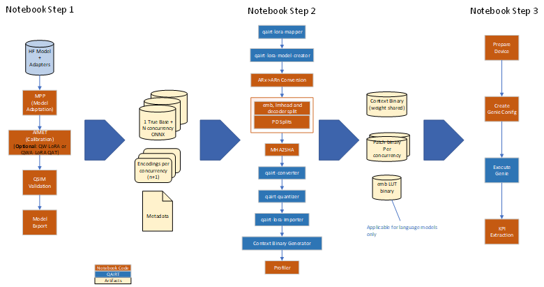
Step1:
Currently, only the PEFT library is supported for LoRAv3 fine-tuned adapter weights.
Optional Quantization Aware Training (QAT) can be utilized to enhance accuracy if the adapter-only-updatable scheme does not meet the required accuracy for a given model. QAT can be achieved using either the Quantization Weight of LoRA (QW-LoRA) or the Quantization Weight and Activation of LoRA (QWA-LoRA) method. Please note that QAT is not included in Notebook Step 1.
Step2:
Step 2 involves the preparation of the max-rank concatenated graph (ONNX), concurrency weights (Safetensors), followed by ARn conversion, splitting the graph, MHA2SHA conversion, and finally converting the max-rank concatenated graph to a QNN graph. It is important to note that the qairt-quantizer does not quantize the full model; instead, it fills up the missed tensors’ encoding (from AIMET).
The output of Step 2 is the context binary (binaries based on model split) and adapter binaries per supported concurrency.
Step3:
Step 3 involves preparing the Snapdragon device, creating Genie configurations, pushing the binaries into the device, and executing them using Genie.
Offline Graph Preparation Flow¶
High-Level Offline Graph Preparation Flow Diagram
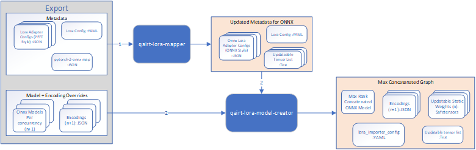
To effectively prepare input artifacts for LoRAv3 QAIRT, it is essential to follow the guidelines outlined in Notebook Step 1.
Here are some key points to consider:
N + 1 ONNX models are needed. This includes one base model (without any LoRA branches) and N ONNX graphs for each concurrency. For example, if there are three adapters (A, B, and C) and the expected concurrencies are A, B, C, and A+C, then N equals 4.
For multiple adapter concurrency, the input ONNX graphs must be the sum of rank concatenated (PEFT style).
The N concurrency graphs must be derived from the base graph. So the base branch in the N graphs must be the same and same-as the base graph. Ensure that the op and tensor names in the base model are consistent across all N + 1 ONNX graphs.
The lora attach-point must be Conv operator and the lora branch in concurrency graphs must be defined as Conv->Mul->Conv. Mul’s 2nd input is interpreted as lora-alpha scale for that concurrency. For a given concurrency, the same lora-alpha value should be passed to all attach-points.
Each adapter requires a separate LoRA Adapter Config (JSON) file, following the PEFT style LoRA Config. The “target_modules” in these files should be present as a “key” in the pytorch2onnx_map (JSON) file. The corresponding “value” in this map is the complete ONNX attach-point name. The corresponding “value” in pytorch2onnx_map (JSON) is the complete ONNX attach-point name. For instance, if the model Llama-3.2-3B has three adapters (elementary, long, and function) and the supported concurrencies are (elementary, long, function, and elementary+long), the export will include three Adapter Config JSON files and one pytorch2onnx_map (JSON) file.
Below are example snippets of adapter configs and the pytorch2onnx_map:
Elementary Adapter Config
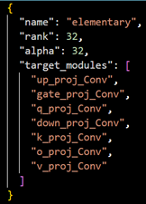
Long Adapter Config
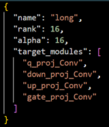
pytorch2onnx_Map
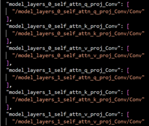
The qairt-lora-model-creator tool generates a single ONNX graph that supports all specified concurrencies. Additionally, it creates a lora-alpha vector as an input tensor to the graph.
The LoRA Config YAML file serves as a top-level configuration, containing paths for adapter config JSON files, the pytorch2onnx_map (JSON) file, and concurrency information. Below is an example for the Llama3.2-3B model:
adapter:
- name: elementary
lora_config: elementary/elementary.json
- name: long
lora_config: long/long.json
attach_point_onnx_mapping: base/llama3_2_base_node_mapping.json
use-case:
- name: base
adapter_names: []
model_name: base/ar73_base_2_of_3.onnx
quant_overrides: base/ar73_base_2_of_3.encodings
- name: elementary_long
adapter_names:
- elementary
- long
model_name: elementary_long/ar73_el_2_of_3.onnx
adapter_alphas:
- 1.0
- 1.0
quant_overrides: elementary_long/ar73_el_2_of_3.encodings
- name: elementary
adapter_names:
- elementary
model_name: elementary/ar73_ele_2_of_3.onnx
adapter_alphas:
- 1.0
quant_overrides: elementary/ar73_ele_2_of_3.encodings
- name: long
adapter_names:
- long
model_name: long/ar73_ln_2_of_3.onnx
adapter_alphas:
- 1.0
quant_overrides: long/ar73_ln_2_of_3.encodings
An encoding override file can be provided for each ONNX file, corresponding to each concurrency. These files contain quantization parameters such as bit-width, datatype, offset, scale, etc., for all weight and activation tensors present in the ONNX file. For more detailed information, refer to the Quantization Overrides Section in the SDK document.
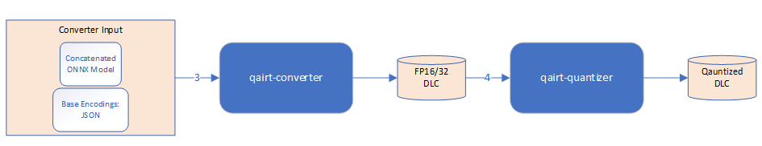
The output of qairt-lora-model-creator becomes the input for the qairt-converter tool. The Floating Point DLC then goes through the qairt-quantizer tool to determine quantization parameters for any missing tensors in the graph.
Note:
To effectively utilize the qairt-quantizer tool, it is recommended to invoke it with the “–float_fallback” option. This ensures that tensors without quantization parameters in the encoding override file remain in floating point format.
Alternatively, the qairt-quantizer tool can be invoked using the “–input_list” option. This requires the user to provide their own calibration data (in raw format) for the input tensors in the graph.
When using the “–input_list” option, it is essential to pass the lora_alpha vector with all alpha values correctly specified.
The following example Python script demonstrates how to create the lora_alpha raw input:
# python gen_alpha_list.py <alpha_list> comma separated
# e.g. python gen_alpha_list 0.7,0.5
import sys
import os
import numpy as np
alpha_list_str = sys.argv[1]
# Convert the string to a list of floats
alpha_list = [float(alpha) for alpha in alpha_list_str.split(",")]
# Convert the list to a numpy array of type float32
alpha_array = np.array(alpha_list, dtype=np.float32)
# Save the numpy array to a binary file
alpha_array.tofile("lora_alpha.raw")
print("Raw data file 'alpha_list.raw' has been created successfully.")
# Open the file
alpha_list_from_file = np.fromfile("lora_alpha.raw", dtype=np.float32)
print(alpha_list_from_file)
Finally, the shown artifacts can be passed to the qairt-lora-importer, which will generate the encoding JSON files and updateable static weights (Safetensors format) per supported concurrency. The tensor names present in these encoding JSON and Safetensors files are compliant with the converted QNN graph.
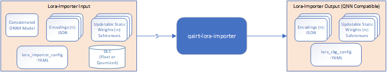
Command templates for offline preparation tools¶
qairt-lora-mapper¶
qairt-lora-mapper --lora_config <lora_config_yaml_file> --output_dir <output directory path>
qairt-lora-model-creator¶
qairt-lora-model-creator --lora_config <updated_lora_config_yaml> --output_dir <output directory path>
qairt-converter¶
qairt-converter -i <concatenated-model-onnx> --quantization_overrides <base-case-encodings> --lora_weight_list <tensor-name-list-from-model-creator>
qairt-quantizer¶
Option 1 with float_fallback:
qairt-quantizer -input_dlc <float-dlc-produced-by-converter> --float_fallback \
--act_bitwidth 16 --bias_bitwidth 32
Option 2 with input_list:
qairt-quantizer -input_dlc <float-dlc-produced-by-converter> --input_list <input-list-file> \
--act_bitwidth 16 --bias_bitwidth 32
qairt-lora-importer¶
qairt-lora-importer -i <concatenated-model-onnx> \
--lora_config <lora-config-yaml-produced-by-model-creator> \
--input_dlc <quantized-dlc> --input_list <input-list> --output_dir <output-directory-path>
Context Binary Generation¶
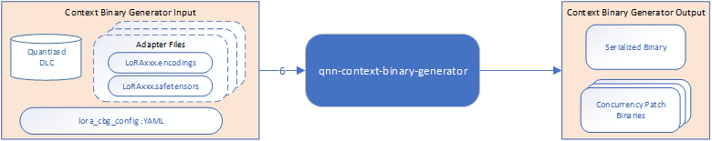
The qnn-context-binary-generator receives “–adapter_weight_config” option along with YAML config (produced by the qairt-lora-importer).
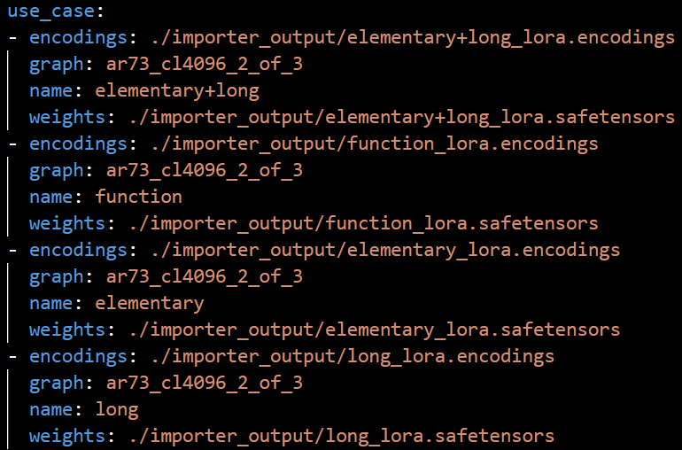
Command template for context binary generation¶
qnn-context-binary-generator --backend libQnnHtp.so --dlc_path <quantized-dlc> \
--binary_file <context-bin> --config_file <htp-config-json> \
--adapter_weight_config <lora-cbg-config-yaml> --output_dir <output-path>
On-target QNN Call Flow¶
At the end of the offline flow, a serialized context binary file (for the base model) and a set of patch binary files (for each LoRA Concurrency including the Base use-case) will be available. To apply the LoRA Adapter on-target, the QnnContext_applyBinarySection( ) API should be used, similar to the LoRAv2 workflow.
The on-target flow is as follows:
Create Context by calling QnnContext_createFromBinary( ).
Apply the adapter by calling QnnContext_applyBinarySection( ).
Update I/O tensors using adapter binary compatible quantization encodings.
Obtain adequately quantized inputs and call QnnGraph_execute( ).
{kind=link}
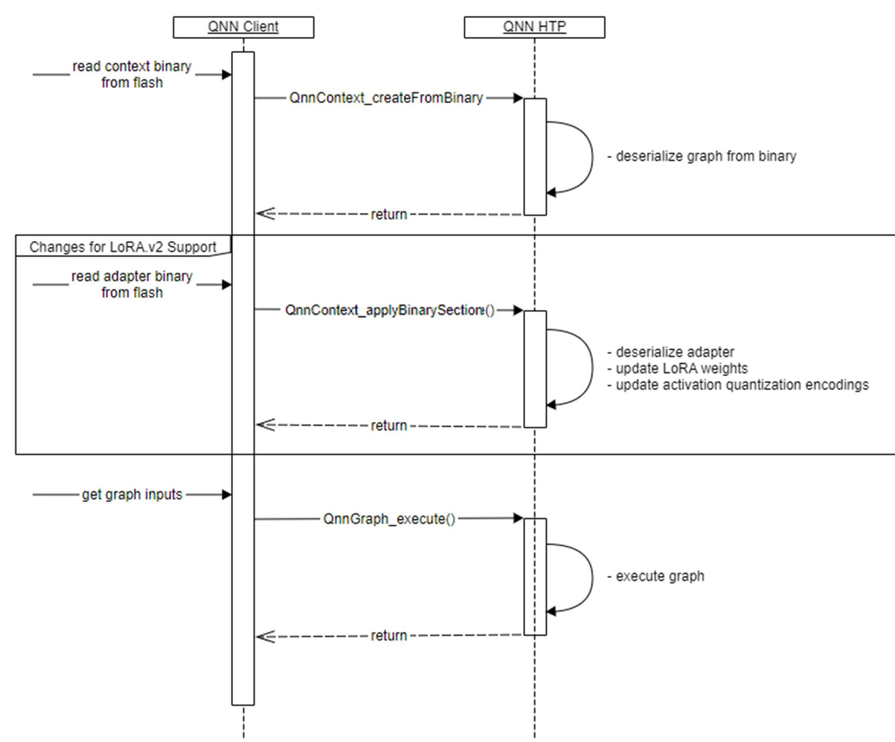
On-target Genie Execution Flow¶
User needs to create a Genie Config JSON file before using the genie-t2t-run tool. Refer to Notebook Step-3 for examples.
A typical example of Genie config is as follows:
"lora":
{
"version": 1,
"alpha-tensor-name": "lora_alpha",
"adapters": [
{
"version": 1,
"name": "ar73_cl4096_2_of_3_default_adapter",
"bin-sections": [
"ar73_cl4096_2_of_3_default_adapter.bin"
]
},
{
"version": 1,
"name": "ar73_cl4096_2_of_3_elementary",
"alphas": [
"alpha-elem"
],
"bin-sections": [
"ar73_cl4096_2_of_3_elementary.bin"
]
}
{
"version": 1,
"name": "ar73_cl4096_2_of_3_elementary+long",
"alphas": [
"alpha-elem",
"alpha-long"
],
"bin-sections": [
"ar73_cl4096_2_of_3_elementary+long.bin"
]
}
]
}
The alpha names can be assigned by the user in the config under “alphas” key
The alpha values will be provided by the user using genie-t2t-run CLI or using GenieDialog_setLoraStrength() API
Command template for Genie T2T CLI tool¶
genie-t2t-run -c <genie-config.json> -p <prompt>
The following flow diagram shows how to use Genie APIs programmatically:
{kind=link}
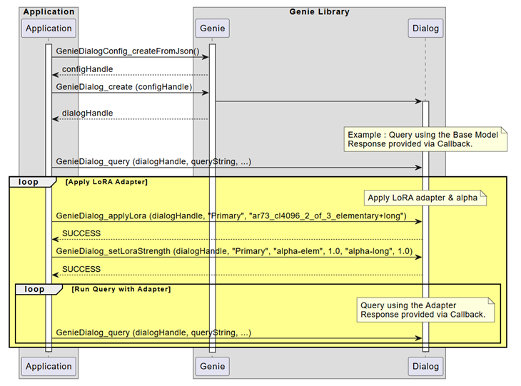